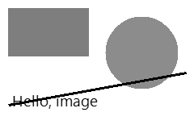
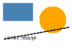

Tutorial 22: Images
Create a picture in memory, draw on it, read and change pixels, convert it to gray, resize it and save it as a PNG — all without opening a window.
What you will learn#
- bitmaps and pixels,
Graphics, brushes and pens,GetPixelandSetPixel,- saving and loading image files,
- when to use a different way to call a method (positional arguments and objects).
Concepts#
An image is a grid of pixels; each pixel has a colour made of red, green, blue (0–255) and an alpha value for transparency. A Bitmap is such a grid in memory. To draw on it you use a Graphics object created from the bitmap. A Brush fills areas, a Pen draws lines, a Font draws text.
System.Drawing is part of the desktop runtime, so the program starts with dnUseDesktop() even though it shows no window.
The program#
# Tutorial 22: images - create, draw, read pixels, resize, convert to gray and save (no window needed)
# ring t22_images.ring [output folder]
load "dotnet.ring"
dnUseDesktop() # System.Drawing is part of the desktop runtime (no window is shown)
using {
"System"
"System.IO"
"System.Drawing"
"System.Drawing.Imaging"
}
func main
cFolder = new Path().GetTempPath()
if len(sysargv) >= 3
cFolder = sysargv[3]
new Directory().CreateDirectory(cFolder)
ok
# STEP 1. A bitmap is a rectangle of pixels. Graphics draws on it.
oBitmap = new Bitmap(240,160)
oGraphics = new Graphics().FromImage(oBitmap)
oGraphics.Clear(new Color().White)
# STEP 2. Draw: brushes fill, pens draw lines
oBlue = new SolidBrush(new Color().SteelBlue)
oOrange = new SolidBrush(new Color().Orange)
oGraphics.FillRectangle(oBlue,new Rectangle(10,10,100,60))
oGraphics.FillEllipse(oOrange,new Rectangle(130,20,90,90))
oPen = new Pen(new Color().Black) {
Width = 3
}
oGraphics.DrawLine(oPen,new Point(10,130),new Point(230,90))
oFont = new Font("Segoe UI",14)
oGraphics.DrawString("Hello, image",oFont,new SolidBrush(new Color().Black),new PointF(12,112))
oGraphics.Dispose()
? "STEP 2: drew a rectangle, a circle, a line and a text on a " + oBitmap.Width + " x " + oBitmap.Height + " bitmap"
# STEP 3. Read pixels: GetPixel gives a color
oPixel = oBitmap.GetPixel(50,40)
? "STEP 3: pixel (50,40) is R=" + oPixel.R + " G=" + oPixel.G + " B=" + oPixel.B + " (steel blue)"
? " pixel (5,5) is " + oBitmap.GetPixel(5,5).Name + " (white, with alpha ff in front)"
# STEP 4. Save: the file type is chosen by the format
cPng = new Path().Combine(cFolder,"tutorial22.png")
oBitmap.Save([ :filename = cPng, :format = new ImageFormat().Png ])
? "STEP 4: saved " + new Path().GetFileName(cPng) + ", " + (new FileInfo(cPng).Length > 0) + " (the file has data)"
# STEP 5. Load it again and make a gray copy: gray = the average of red, green and blue
oLoaded = dnNew("Bitmap",[ :filename = cPng ]) # a constructor chosen by the name of its parameter
oGray = new Bitmap(oLoaded.Width,oLoaded.Height)
for nY = 0 to oLoaded.Height - 1
for nX = 0 to oLoaded.Width - 1
oColor = oLoaded.GetPixel(nX,nY)
nGray = floor((oColor.R + oColor.G + oColor.B) / 3)
oGray.SetPixel(nX,nY,new Color().FromArgb_3(nGray,nGray,nGray))
next
next
cGray = new Path().Combine(cFolder,"tutorial22-gray.png")
oGray.Save([ :filename = cGray, :format = new ImageFormat().Png ])
? "STEP 5: gray copy made, pixel (50,40) is now " + oGray.GetPixel(50,40).R + " in all three channels"
# STEP 6. Resize: draw the image smaller on a new bitmap
oSmall = new Bitmap(120,80)
oSmallGraphics = new Graphics().FromImage(oSmall)
oSmallGraphics.DrawImage(oLoaded,new Rectangle(0,0,120,80))
oSmallGraphics.Dispose()
cSmall = new Path().Combine(cFolder,"tutorial22-small.png")
oSmall.Save([ :filename = cSmall, :format = new ImageFormat().Png ])
? "STEP 6: resized copy is " + oSmall.Width + " x " + oSmall.Height
# release the files, remove the temporary ones
oBitmap.Dispose()
oLoaded.Dispose()
oGray.Dispose()
oSmall.Dispose()
if len(sysargv) < 3
new File().Delete(cPng)
new File().Delete(cGray)
new File().Delete(cSmall)
okSTEP 2: drew a rectangle, a circle, a line and a text on a 240 x 160 bitmap
STEP 3: pixel (50,40) is R=70 G=130 B=180 (steel blue)
pixel (5,5) is ffffffff (white, with alpha ff in front)
STEP 4: saved tutorial22.png, 1 (the file has data)
STEP 5: gray copy made, pixel (50,40) is now 126 in all three channels
STEP 6: resized copy is 120 x 80The three pictures that the program saves:



How it works#
Drawing#
new Bitmap(240,160) is an empty picture; new Graphics().FromImage(oBitmap) gives the drawing tool; Clear(color) fills the background. Then:
| Call | Draws |
|---|---|
FillRectangle(brush, new Rectangle(x,y,w,h)) | a filled rectangle |
FillEllipse(brush, new Rectangle(x,y,w,h)) | a filled ellipse (a circle if w = h) |
DrawLine(pen, new Point(x1,y1), new Point(x2,y2)) | a line |
DrawString(text, font, brush, new PointF(x,y)) | text |
Colours are new Color().SteelBlue, new Color().Black... (the names of the .NET Color properties). A pen's width is a property: new Pen(color) { Width = 3 }.
These drawing methods take their arguments in order: a Rectangle or a Point object carries the numbers. In tutorial 14 UiCanvas gives shorter calls for simple drawing on screen.
Pixels#
GetPixel(x,y) returns a Color with R, G, B and Name (the hexadecimal text ffffffff: alpha, red, green, blue). Coordinates start at 0. Steel blue is R=70 G=130 B=180, exactly what step 3 prints.
Saving and loading#
oBitmap.Save([ :filename = cPng, :format = new ImageFormat().Png ]) writes the file; the format decides the type (Png, Jpeg, Bmp, Gif). To open a file, dnNew("Bitmap",[ :filename = cPng ]) chooses the constructor by the parameter name.
A gray copy#
A pixel is gray when its red, green and blue are equal. The average (R + G + B) / 3 is a simple conversion. Two loops visit every pixel: for every nY, for every nX, read the colour, compute the gray value, write it with SetPixel. new Color().FromArgb_3(r,g,b) makes a colour from three numbers. Pixel loops are slow in any language that goes through a bridge: for big images use LockBits or leave the work to a library.
Resizing#
Draw the loaded image into a smaller rectangle of a new bitmap: DrawImage(oLoaded, new Rectangle(0,0,120,80)).
Release#
Dispose() frees the picture memory and unlocks the file. Always dispose bitmaps and graphics objects when you are done, and before you delete their file.
What you learned#
- bitmap, pixel, colour,
Graphics, - brushes and pens,
GetPixel/SetPixelloops,- save, load, resize,
Dispose()when finished.
Exercises#
- Draw a 100 × 100 chessboard with
FillRectangle. - Turn the picture into a negative (255 − each channel).
- Make a thumbnail that keeps the proportions of any picture: width 100, height
100 × h / w. - Save the same bitmap as a JPEG and compare the file sizes.
- Show the picture in a window with a
PictureBox(oPicture.Image = oBitmap).